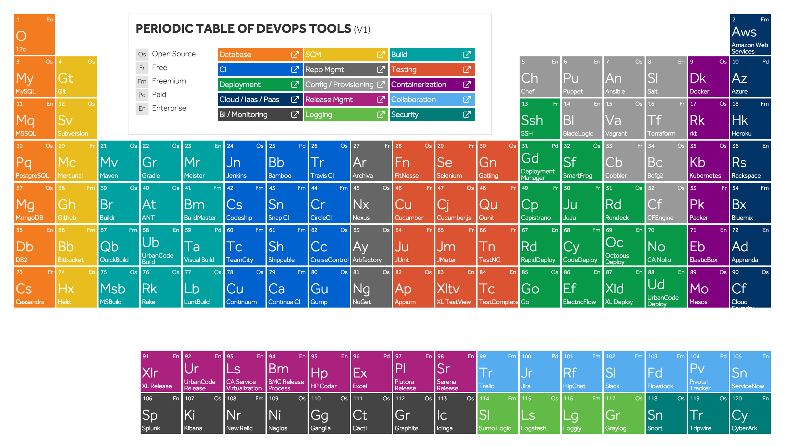
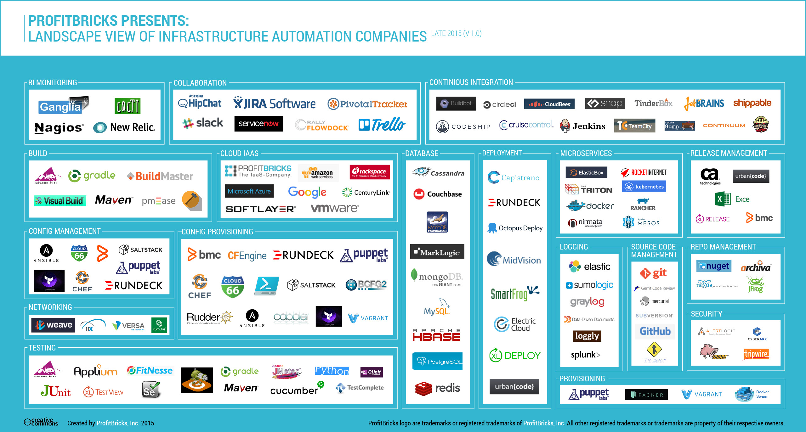

**[Back to the main page](index.html)**
<h2 id="devops-dev-operations-">DevOps (Dev + Operations)</h2>
<h3 id="introduction">Introduction</h3>
<ul>
<li><u><strong>In General</strong></u><ul>
<li>It is a process/culture used to enhance the dev and operations</li>
<li>Who touches all parts of SDLC</li>
<li>Keep it simple and clear</li>
</ul>
</li>
</ul>
<ul>
<li><u><strong>Technical</strong></u><ul>
<li>It is a mindset that enables Communication, Collabaration, Integration between Software Developers, Quality Engineers and Information Technology (Operators) Professionals to enable rapid evolution of product or services.</li>
<li>It focuses on delivering software product faster and lowering the failure rate of releases.</li>
</ul>
</li>
</ul>
<p><img src="../images/Devops.png" alt="Devops"></p>
<h3 id="dev-and-ops-roles">Dev and Ops Roles</h3>
<h4 id="roles-of-developers">Roles of Developers</h4>
<ul>
<li>Develop/modify applications</li>
<li>Try new Technologies</li>
</ul>
<h4 id="roles-of-operations">Roles of Operations</h4>
<ul>
<li>Build, Deploy and release</li>
<li>Performanance and avaliability / maintain stability</li>
<li>Create or enhance Services</li>
</ul>
<p><img src="../images/tsd-csd.png" alt="tsd-csd"></p>
<h3 id="devops-eco-system">Devops Eco System</h3>
<ul>
<li>SCM: SVN, Git</li>
<li>Scripting: Shell, Python, Perl, Ruby on Rails</li>
<li>Web App Servers: Apcahe, IIS, Tomcat, Nginx</li>
<li>Databases: MySql, MongoDB, PostgreSql</li>
<li>ElasticCache: Redis</li>
<li>Build Tools: Ant, Maven</li>
<li>Continuous Integration: Hudson/Jenkins, Codeship</li>
<li>Configuration Management: Puppet, Chef</li>
<li>Cloud: AWS</li>
<li>Code Analysis: Sonar</li>
<li>Containerization: Docker</li>
<li>Monitoring: Nagious</li>
<li>Metrics: StatsD, Collectd, graphite</li>
<li>Binary Repo Manager: Nexus, Artifactory, s3</li>
<li>Misc: CodeCommit, CodeDeploy, CodePipline</li>
</ul>
<p></p>
<hr>
<p></p>
<h3 id="checklist-for-linux-build-server-if-slow-">Checklist for Linux-build-server (If slow)</h3>
<table>
<thead>
<tr>
<th>Level</th>
<th>Description</th>
</tr>
</thead>
<tbody>
<tr>
<td>Application Level troubleshooting</td>
<td>RAM related issues, Disk I/O read write issues, Disk Space related Issues, etc.</td>
</tr>
<tr>
<td>System Level troubleshooting</td>
<td>Check for Application log file OR application server log file, system performance issues, Web Server Log – check HTTP, tomcat log, etc. or check jboss, weblogic logs to see if the application server response/receive time is the issues for slowness, Memory Leak of any application</td>
</tr>
<tr>
<td>Dependent Services troubleshooting</td>
<td>Antivirus related issues, Firewall related issues, Network issues, SMTP server response time issues, etc.</td>
</tr>
</tbody>
</table>
<h3 id="references">References</h3>
<ul>
<li><a href="http://devops.com/">http://devops.com/</a></li>
<li><a href="https://www.reddit.com/r/devops/">https://www.reddit.com/r/devops/</a></li>
<li><a href="http://it-ebooks.info/search/?q=devops">http://it-ebooks.info/search/?q=devops</a></li>
<li><a href="http://docker-books.com/">http://docker-books.com/</a></li>
<li><a href="http://www.devopsbookmarks.com/">dev-ops-bookmarks</a></li>
<li><a href="https://www.google.co.in/search?biw=1301&amp;bih=605&amp;tbm=isch&amp;sa=1&amp;q=devops+%3D+dev+%2B+ops">dev-ops-img</a></li>
<li><a href="https://blog.profitbricks.com/51-best-devops-tools-for-devops-engineers/">https://blog.profitbricks.com/51-best-devops-tools-for-devops-engineers/</a></li>
<li><a href="https://gist.github.com/ssmythe/ae1449b116ece85dc10d">https://gist.github.com/ssmythe/ae1449b116ece85dc10d</a></li>
</ul>
<hr>
<center><strong><em>Thank You</em></strong><br/><span style="color:orange;"><i>Sivaram</i></center>
<hr>